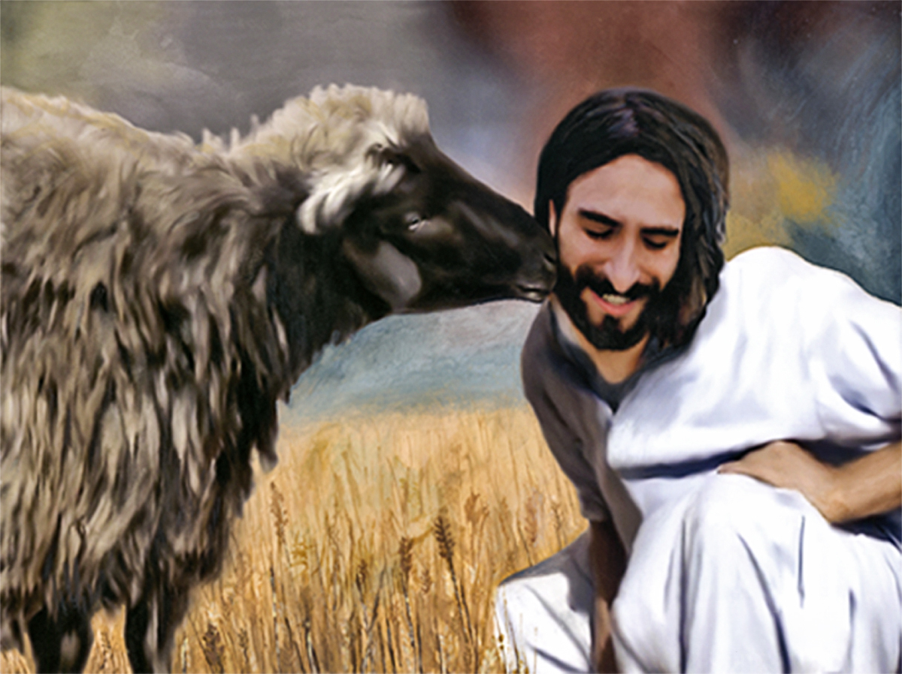
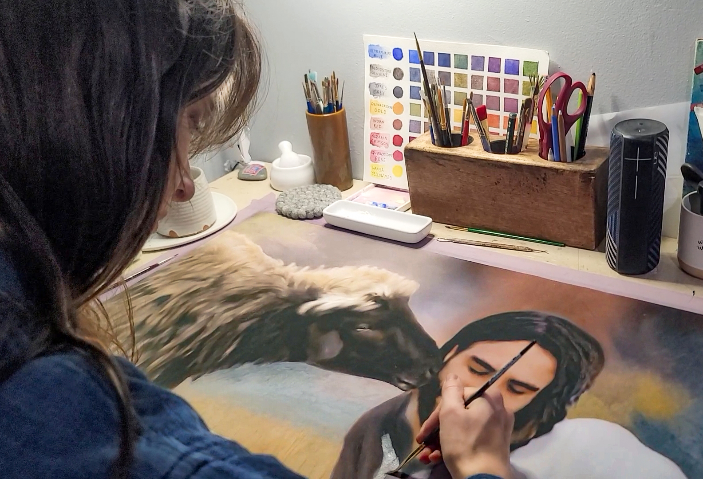
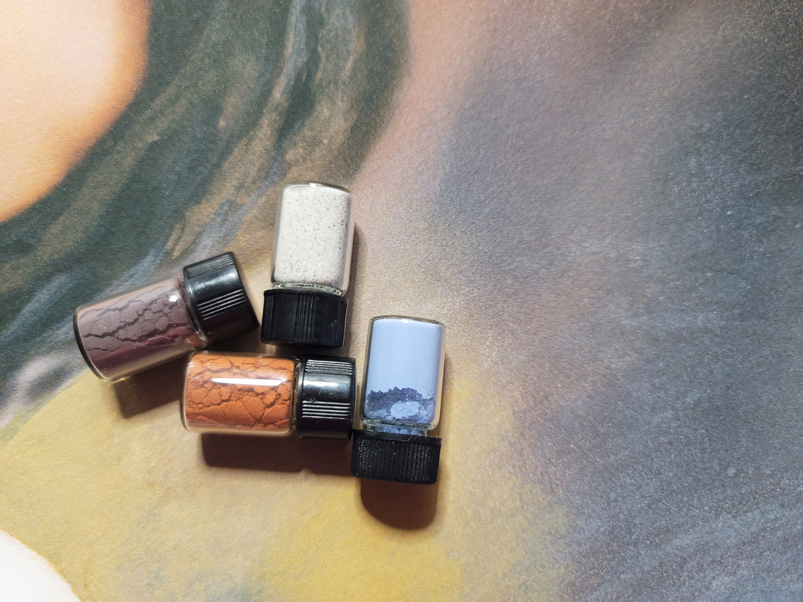
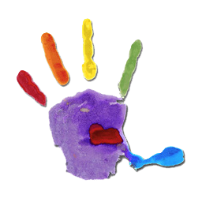
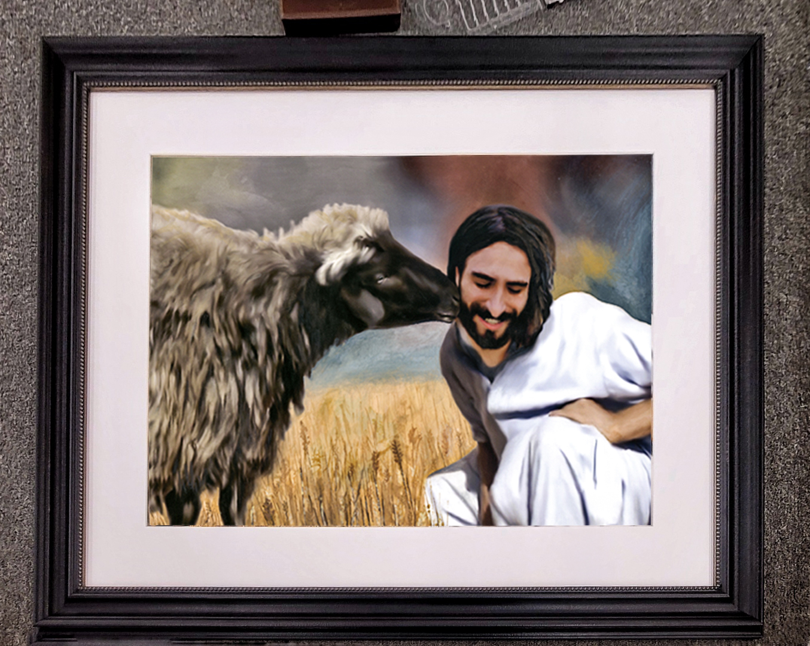
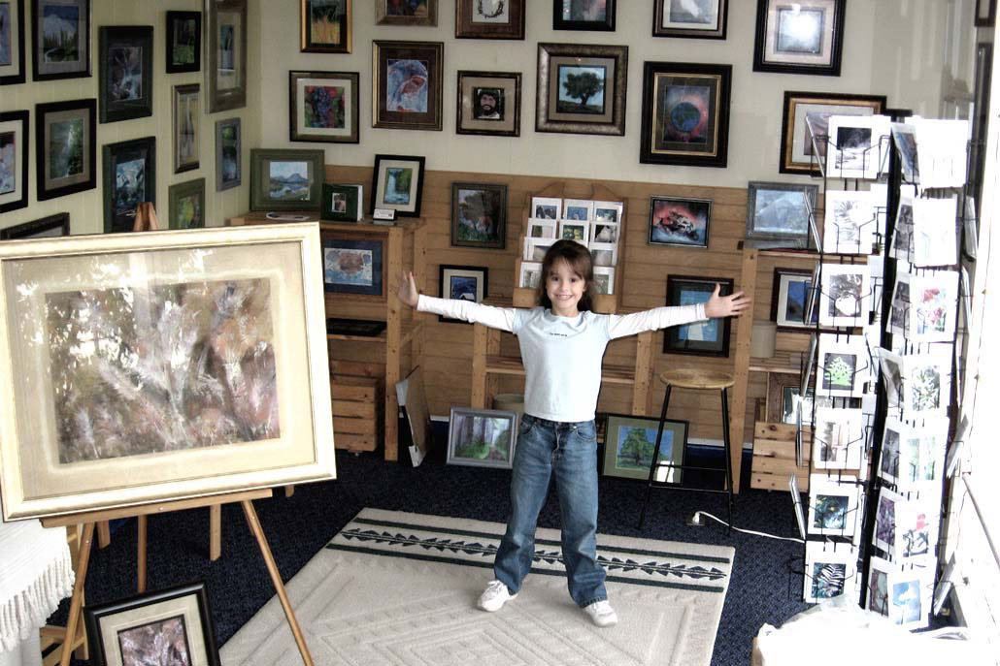

Image placeholderthe-kiss-copyright-2019-painting-by-jordan-a-cook.jpg
The painting alone
The Kiss
Jordan A. Cook | First edition, hand-finished archival giclee
MediumGouache, Oil
Artwork Size30 x 24 inches
Framed42 x 36 inches
Printing150-year archival giclee, hand-finished by the artist
GlassMuseum-quality anti-reflective glass
ReleasedApril 19, 2019
[PASTE SHORT DESCRIPTION HERE]
The story within the paint
[PASTE PARAGRAPH 1 HERE: The story within the paint]
[PASTE PARAGRAPH 2 HERE: The story within the paint]

Image placeholderjordan-a-cook-painting-the-kiss.jpg
Jordan painting The Kiss
Video placeholder
YouTube embed, 16:9
YouTube embed, 16:9
Film • [PASTE VIDEO LABEL HERE]
Specular hematite

Image placeholderthe-kiss-pigments-jordan-a-cook.jpg
Close-up of four pigment bottles

Handprint placeholderjordans-handprint.png
[PASTE PARAGRAPH 1 HERE: Specular hematite]
[PASTE PARAGRAPH 2 HERE: Specular hematite]
Tom, the anthropologist
[PASTE PARAGRAPH 1 HERE: Tom, the anthropologist]
[PASTE PARAGRAPH 2 HERE: Tom, the anthropologist]

Image placeholderthe-kiss-copyright-jordan-a-cook-framed.jpg
Final framed photograph
About the Artist, Jordan A. Cook

Image placeholderjordan-a-cook-childhood-gallery.jpg
Jordan in her childhood gallery
[PASTE PARAGRAPH 1 HERE: About the Artist]
[PASTE PARAGRAPH 2 HERE: About the Artist]